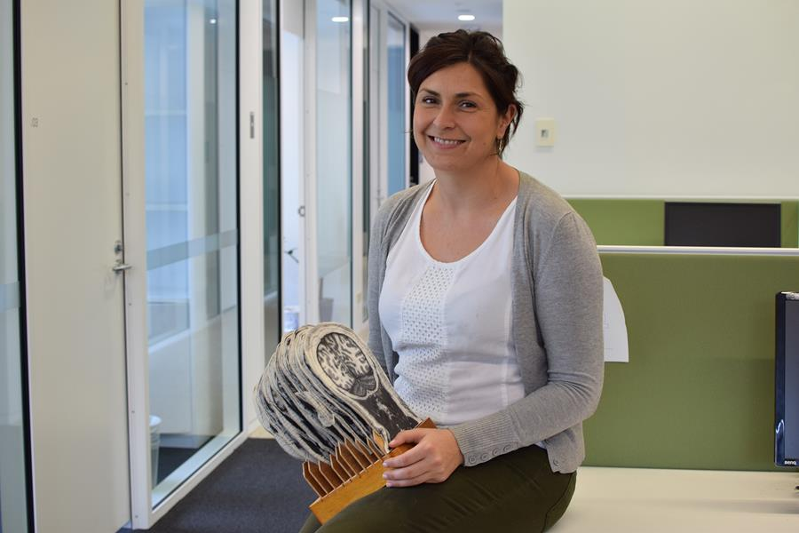

Dr. Kristi Griffiths
by Kristi Griffiths, 10 Jun 2019

Attention deficit hyperactivity disorder (ADHD) is the most common neurodevelopmental disorder, affecting on average at least one child in every classroom. It often manifests with heightened sensitivity to immediate reward, an increased propensity for risk-taking behaviour, and poor planning abilities. This has an enormous impact during adolescence, when greater independence and increasingly complex social and occupational situations place increasing demands on decision-making skills. It is no surprise then that adolescent ADHD increases risk for numerous long-term negative outcomes such as poor educational attainment and occupational stability, peer rejection, increased rates of incarceration (35% of a NSW prison population screened positive for ADHD) and a more than doubled risk of death (e.g. car accidents, violence, poor health habits).
Dr Kristi Griffiths is a current NHMRC Early Career Research Fellow based at the Brain Dynamics Centre, Westmead Institute for Medical Research and The University of Sydney, investigating brain circuits associated with impaired goal-directed behaviour in ADHD. In ADHD, dysfunction has long been known to occur in the fronto-parieto-striatal networks that mediate cognitive control and motivation, two vital components of goal-directed behaviour. In addition, functioning of these networks is heavily modulated by dopamine (DA) and noradrenaline (NA)—the primary targets of ADHD medications. Her research applies advanced neuroimaging-based connectomic methodology to address key issues such as identifying individualised dysfunction in this highly heterogeneous disorder and investigating the modulatory effects of common ADHD medications on circuits underlying goal-directed behaviour. Kristi is also using imaging to explore neurodevelopment of these circuits in a project as part of the Elaine Tolley Medal in Mental Health which she was awarded recently. Complementary to this work, she was also recently awarded an industry grant to examine how Vyvanse, a popular stimulant medication, effects goal-directed behaviour networks in Binge-Eating Disorder. Comorbidity of ADHD and Binge-Eating Disorder is relatively common, and these disorders are thought to share overlap in neurobiological bases, particularly with regards to dysfunction in goal-directed behaviour.
Overall, Dr Griffiths’ research program aims to better understand neural circuits underlying goal-directed behaviour, how these are affected in people with mental health concerns, and to produce research that can inform clinical management and novel treatments for disorders with impaired decision making skills.